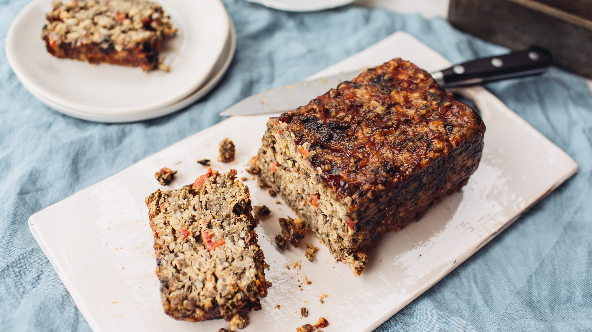

Vegetarian Meatloaf

To my non-vegetarians here.. just hear me out. I promise it is not as bad as it sounds. To all my vegetarian friends here, you're at just the right place. This treat is a delicious source of protein and Vitamin B12, something we all lack a little of here and there. It is hearty with a powerful punch from the first to last bite.
This meatloaf is great to bring to any event, and the best part is.. nobody knows it's vegetarian! The subtle texture changes between meatloaf and "fake" meatloaf turn out to be a positive rather than a negative. When many family members of mine know something is vegetarian, they automatically feel as though it's not as good, before even trying it. When it comes to this meatloaf however, they cannot deny it's rich flavour.
Ingredients:
- 1 1/2 cups cooked brown rice
- 1 1/2 cups walnuts
- 1/2 cup cashews
- 1 yellow onion
- 3 cloves garlic
- 3 oz. shiitake mushrooms
- 3 oz. baby bella mushrooms
- 2 tbsp. chopped fresh flat-leaf parsley
- 2 tbsp. olive oil
- 1 tsp. dried marjoram
- 1 tsp. dried thyme
- 1 tsp. dried sage
- 4 large eggs
- 1 cup cottage cheese
- 12 oz. Swiss cheese, grated
- 1 tsp. kosher salt
Directions:
- Prepare the brown rice and preheat oven to 375F
- Place walnuts and cashews on a baking sheet and toast for 8-10 minutes. Meanwhile. finely chop 1 onion and mince 3 garlic cloves. Clean and finely chop the mushrooms, and then the fresh parsley. When the nuts have cooled, chop them as well.
- In a large skillet, heat about 2 tbsp. olive oil. Add the onion and garlic and cook until translucent, ~3 mins. Add the mushrooms, marjoram, thyme, and sage. Cook about 5 minutes, until the mushrooms are golden. Move to large bowl.
- In a small bowl, lightly beat 4 eggs together. In the large bowl, combine the onion and mushroom mixture with the toasted nuts, parsley, rice, cottage cheese, Swiss cheese, eggs, and kosher salt.
- Butter a 9-inch load pan, line the bottom with parchment paper, and butter it again. Pour the mixture from the bowl into the pan.
- Bake 1 hour until golden brown. Let cool in pan for 20 minutes, then invert loaf and remove from pan. Slice into pieces and serve warm. Leftovers can be stored for a few day in the refrigerator or a few months in the freezer (cut into pieces). Reheat in a 375F oven.